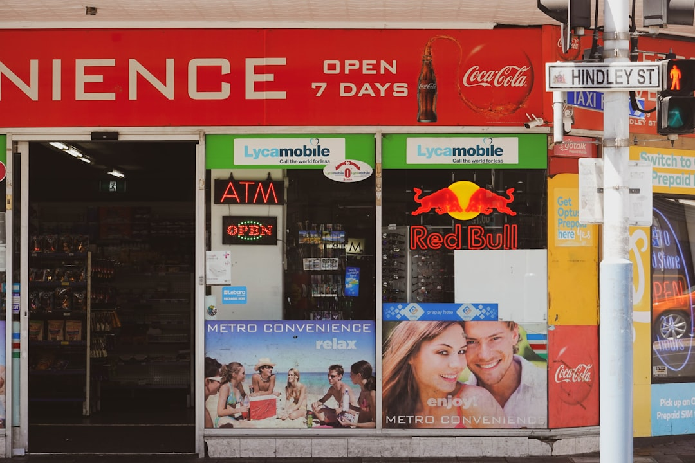

Start with the supported facts: the published page says the enquiry support is free, lists 50+ partner brokers, and says brokers access 40+ lenders. It names home, investment, car, commercial, business and equipment finance across Adelaide and South Australia. A borrower should use that range to choose the right specialist conversation, then ask how lender choice, costs, documents and credit assistance responsibilities will be explained before applying.
For borrowers comparing finance brokers adelaide options, the practical question is which specialist fits the loan type, documents, lender panel and property or asset purpose.
Finance Brokers Adelaide Explained
Adelaide Finance Broker presents itself as an enquiry website that helps people speak with licensed brokers across Adelaide and South Australia. The useful comparison is whether the broker regularly handles the exact finance purpose in front of you.
The published page names home loans, investment loans, car loans, commercial loans, business loans and equipment finance. Those categories need different starting questions. A home loan borrower may focus on loan structure, repayment comfort and settlement needs. An investor can ask how rental income, existing debt and future refinance plans will be discussed. A business borrower may need to explain cash flow, asset purpose and trading history before a lender view is useful.
- Home loan: ask which lenders may suit your deposit, income pattern and purchase timing.
- Investment loan: ask how the broker will discuss rental income, existing loans and interest-only options.
- Vehicle or equipment finance: ask whether the asset, invoice and business use affect the lender shortlist.
- Commercial or business finance: ask what records are needed before lender appetite can be tested.
Who This Applies To
This guide applies to Adelaide borrowers who need finance help but are unsure which broker conversation to start. It is relevant for first home buyers, refinancers, investors, car buyers, business owners and commercial borrowers only because those borrower needs connect to the loan types named on the published page.
A first home buyer should keep the discussion grounded in borrowing capacity, deposit position, loan features and comparison of loan costs. A refinancer should ask what would make switching worthwhile after costs and features are considered. An investor should separate the property decision from the loan decision, with tax questions taken to a qualified tax adviser rather than treated as credit advice.
For a broader single-broker perspective on the same Adelaide topic, this related finance broker Adelaide guide gives another reference point without replacing direct lender or broker due diligence.
Local Questions Worth Asking
The published page says brokers cover Adelaide and South Australia, and lists areas including Adelaide CBD, Adelaide Hills, Aldinga, Brighton, Burnside and Campbelltown. Locality is useful when it changes the file, such as the property type, security, business asset, purchase purpose or documents the lender may request.
Ask whether the broker has handled similar property or asset types in South Australia. Ask what contract, valuation, settlement or asset information the lender will need. Ask whether more detail may be required about business use, rental position or existing debts. If an answer stays general, bring the discussion back to documents, lender options and decision points.
For business loans Adelaide borrowers, evidence matters. A broker conversation cannot replace trading history, revenue records or tax documents. Its value is in identifying which lenders may assess the file and what gaps should be fixed before an application is lodged.
Broker Panel And Cost Checks
The published page says partner brokers work with major banks including CBA, ANZ, Westpac, NAB and BankSA, plus specialist lenders, and that brokers access 40+ lenders. A broad panel is useful only when the borrower understands how the shortlist was built.
Ask these questions early:
- Which lenders were considered and which were excluded?
- Is the suggested loan the lowest cost suitable option, or the most flexible suitable option?
- What fees, commissions or lender-paid arrangements apply?
- What would change if the loan amount, deposit, asset value or business documents changed?
- What happens if the preferred lender declines the file?
ASIC Moneysmart provides home loan guidance that includes comparing home loans, interest rates, fees and repayments. That comparison discipline applies whether the loan is arranged through a mortgage broker, directly with a lender, or through a specialist finance broker.
Documents Before An Enquiry
A tighter enquiry usually produces a better first conversation. Before speaking with a broker, prepare income evidence, existing loan details, deposit or equity information, identification, the purchase or refinance purpose and any business or asset documents that explain the request.
Investors should ask how rental assumptions, existing debt and repayment plans will be handled in the loan discussion. ASIC Moneysmart provides guidance on understanding property investment, so investment borrowers should keep investment strategy, tax advice and credit advice in separate lanes.
For asset finance Adelaide enquiries, keep the invoice, asset description, intended use and business context together. For construction loans Adelaide borrowers, ask what progress payment, builder and contract information the lender will want. If those details are not ready, the broker conversation can still identify the missing pieces before a formal application.
- Define the purpose. State whether the finance is for a home, investment property, vehicle, equipment, business need or commercial property.
- Prepare evidence. Gather income, deposit, debt, asset, purchase and business documents before the broker discussion.
- Ask about lender choice. Request a clear explanation of which lenders were considered and why any were excluded.
- Check costs and roles. Confirm broker fees, lender-paid commissions, credit assistance responsibilities and any loan costs before proceeding.
- Compare the recommendation. Review whether the suggested option fits repayment comfort, features, settlement needs and future plans.
| Situation | Useful broker focus | Question to ask |
|---|---|---|
| Home buyer | Loan structure, lender choice and repayment comfort | Which lenders fit my deposit, income and purchase timing? |
| Refinancer | Switching cost, loan features and lender alternatives | What cost or feature change makes refinancing worthwhile? |
| Investor | Rental assumptions, debt position and investment purpose | How will lenders discuss rental income and existing loans? |
| Business or asset borrower | Documents, asset purpose and lender appetite | What evidence is needed before an application is sensible? |
Common questions
Is the Adelaide service itself a broker? The published page says Adelaide Finance Broker is an enquiry website and that licensed finance brokers provide all credit assistance. It also says it does not provide financial advice or credit assistance.
What loan types are named on the published page? The page names home loans, investment loans, car loans, commercial loans, business loans and equipment finance. It also refers to brokers who specialise in different types of finance.
How many lenders are involved? The published page says brokers access 40+ lenders and refers to major banks plus specialist lenders. Borrowers should still ask which lenders were considered for their own file.
Is the enquiry support paid by the borrower? The page says the broker enquiry support is free and that brokers are paid by lenders. Borrowers should still ask each broker to explain fees, commissions and loan costs before applying.
This guide covers broker selection questions for Adelaide home, investment, vehicle, business, commercial and equipment finance enquiries.